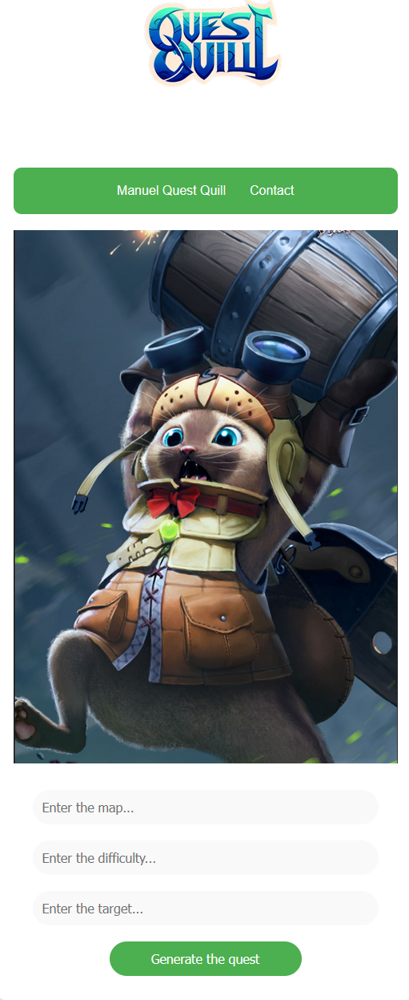
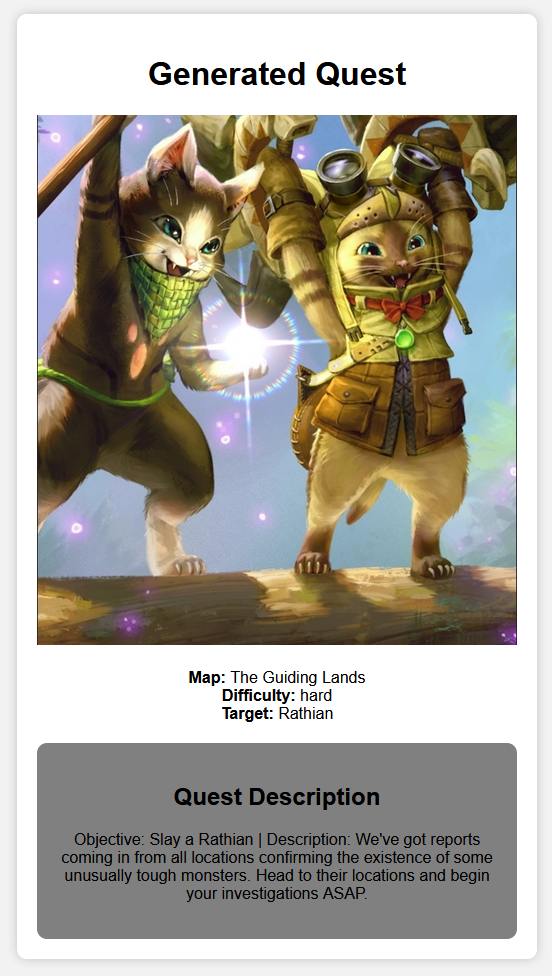

Pour installer Quest Quill, suivez ces étapes :
- Clonez le dépôt :
git clone git@github.com:kittog/quest-quill.git
- Accédez au répertoire du projet :
cd quest-quill
- Installez les dépendances :
pip install -r requirements.txt
Pour utiliser Quest Quill, suivez ces étapes :
- Téléchargez le modèle disponible sur WeTransfer.
- Accédez au dossier de l'API :
cd/api
- Décompressez le fichier .rar téléchargé sur WeTransfer dans le dossier API.
- Exécutez l'application :
python -m uvicorn main:app --reload
- Suivez les invites pour spécifier les paramètres de la quête tels que la difficulté, le cadre et le type de quête.
- Votre quête est générée ! Nous espérons qu'elle vous plaît !
Comment générer une quête une fois sur l'interface ?
Afin de générer la quête, il faut mentionner dans l'espace dédié:
- La carte où se déroulera la quête pour pouvoir s'acclimater à divers environnements de combat.
- La difficulté de la quête à choisir entre easy, medium, hard
- Le ou les monstres à chasser.
Bestiaire A COMPLETER
| Jagras |
Baggi |
Arzuros |
Great Baggi |
| Lagombi |
Kulu-Ya-Ku |
Tetranadon |
Aknosom |
| Great Izuchi |
Royal Ludroth |
Barroth |
Khezu |
| Bishaten |
Somnacanth |
Pukei-Pukei |
Jyuratodus |
| Basarios |
Rathian |
Tobi-Kadachi |
Volvidon |
| Mizutsune |
Anjanath |
Rathalos |
Almudron |
| Goss Harag |
Nargacuga |
Zinogre |
Magnamalo |
| Tigrex |
Diablos |
Rajang |
Kushala Daora |
| Teostra |
Chameleos |
Wind Serpent Ibushi |
Thunder Serpent Narwa |
| Narwa the Allmother |
Crimson Glow Valstrax |
Apex Arzuros |
Apex Rathian |
| Apex Mizutsune |
Apex Rathalos |
Apex Diablos |
Apex Zinogre |
Map
| Shrine Ruins |
Frost Islands |
Sandy Plains |
Flooded Forest |
| Lava Caverns |
Shrine Ruins |
Arena |
Elder's Recess |
| Rotten Vale |
Hoarfrost Reach |
The Guiding Lands |
Coral Highlands |
| Ancient Forest |
Wildspire Waste |
Jungle |
Seliana Supply Cache |
Données utilisées
Les données qui ont été utilisées dans ce projet viennent d'un dépôt GitHub libre sous licence MIT : monster-hunter-DB
Ces données sont des quêtes qui proviennent du jeu vidéo Monster Hunter : un jeu de combat entre chasseurs et monstres (hyper classes et super stylés). La particularité des quêtes de Monster Hunter,
est qu'elles sont une structure simple : un monstre à tuer, un contexte, un objectif, une carte et une difficulté. Ce qui est parfait pour notre projet.
En plus de ça, ce sont des quêtes qui ont un fond d'humour ce qui nous permet de rire malgré le destin du monde qui s'avère bien noir...
Prétraitement
- Les données du dépôt GitHub sont sous un format JSON avec plusieurs types de balises :
target, objective, map, difficulty.
- Le corpus d'entraînement est constitué d'un total de 848 quêtes.
- À partir de ce corpus, extraction du contenu des balises qui nous intéressent :
difficulty, objective, target, description, à l'aide du script scripts/pretraitement.ipynb.
- Pour simplifier la visibilité, le rendu de l'API, ainsi que le code, on met le corpus sous format
.txt en formattant les quêtes. Exemple : Map : Desert | Difficulty : easy | Objective : Kill a Rathian | Description blabla....
- Après quelques essais de génération de quêtes, nous nous sommes rendues compte qu'il y avait trop de monstres à apprendre par rapport au nombre de quêtes dont nous disposions. Nous rencontrions donc
des soucis dans la génération des objectifs et des descriptions des quêtes.
- Simplification du corpus en retirant 12 monstres ainsi que 7 maps du corpus. Pour certains monstres, leurs noms ont été synthéthisés. Exemple : Apex Nargacuga → Nargacuga.
- Pour la simplification, on procède avec Notedpad, et on remplace les noms des monstres/maps peu fréquents
(présents dans moins de 5 quêtes) par des monstres/maps plus fréquents.
- Les balises difficultées ont également étaient somplifié. Dans le corpus c'est la notation du jeu tel que : MR1 , HR6. Nous avons conscience que le modèle doit pouvoir être utilisé par plusieurs personnes connaissnat pas ce jeu, nous avons donc converti ces niveaux en des termes plus générique tel que : easy , medium, hard
Fine Tuning GPT2
- L'entraînement a été réalisé avec le script
train.py
- Le modèle utilisé est GPT2 medium pour éviter les longs délais d'entraînement qu'impliquerait la version large.
- Notre corpus au format
.txt est passé en input.
Choix des paramètres pour l'entraînement :
- Apprentissage basé sur des blocs textuels de taille 75, permettant de couvrir intégralement une quête. (ce choix se justifie par la longueur moyenne d'une quête qui est de 75.)
- L'entraînement se déroule sur 10 epochs avec un batch size de 10.
Choix des paramètres pour la génération :
- La génération des quêtes se fait à l'aide du script
generate.py
- Limitation à 75 max de n-grammes générés pour la génération de texte.
- La température contrôle le niveau de créativité. Le choix de valeurs plus élevées génère des sorties plus variées mais moins cohérentes.
- Top-K Sampling limite les choix de tokens aux K tokens les plus probables, favorisant la cohérence tout en permettant de la variété.
- Top-P Sampling (Nucleus Sampling) limite la distribution cumulative des probabilités, permettant une génération plus dynamique parmi les tokens les plus probables.
- No Repeat N-Grams empêche la répétition immédiate de séquences de mots pour éviter les motifs répétitifs indésirables.
- Les paramètres de génération peuvent être ajustés pour obtenir les résultats souhaités.
- Le prompt spécifié en back end est :
Map : {map} | Dificulty : {level} | Target : {monstres}
- Ce prompt permet d'inciter le modèle à générer la suite de la quête →
Objectif , Description.
- Nous avons choisi les hyper paramètres pour la génération de manière empirique : au début nous générions des quêtes avec une max length de 175, ce qui était beaucoup trop. Le générateur était alors très incohérent dans les descriptions.
- top k et top p ont été utilisés pour que les quêtes générées soient, pour chaque génération utilisant les mêmes prompts, différentes. Au départ, nous obtenions systématiquement la même quête pour certains mots clefs de départ, ce qui n'était pas du tout amusant.
Intégration avec FastAPI
Aspect API

Image 1 — Aperçu de l'API au démarrage.

Image 2 — Aperçu de l'API lors de la génération.
- L'API de Quest Quill fut développée à l'aide du module Python
FastAPI.
- L'interface Web développée propose à l'utilisateur d'indiquer les trois critères nécessaire pour la génération de la quête souhaitée. (voir ci-dessous)
 Image 3 — Aperçu des champs à compléter pour avoir notre quête.
Image 3 — Aperçu des champs à compléter pour avoir notre quête.